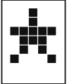

ดาว

กฎดาวไม่มีตารางแปลงเสียงเป็นปุ่มแบบตรงตัว ให้เริ่มคำนวณจาก ปุ่ม 4 แล้วเดินตามเสียงจริงทีละตัว:
- ต่ำ = เดินต่อ 1 ช่อง
- กลาง = เดินต่อ 2 ช่อง
- สูง = เดินต่อ 3 ช่อง
เมื่อเดินเกิน 4 ให้วนกลับไป 1 หมายเลขที่เดินถึงคือคำตอบของเสียงตัวนั้น และเป็นจุดเริ่มของเสียงจริงตัวถัดไป นี่คือวิธีใน solveStar()
| ปุ่มล่าสุด | ได้ยินต่ำ | ได้ยินกลาง | ได้ยินสูง |
|---|---|---|---|
| 4 / จุดเริ่ม | 1 | 2 | 3 |
| 1 | 2 | 3 | 4 |
| 2 | 3 | 4 | 1 |
| 3 | 4 | 1 | 2 |
ตัวอย่างที่ 1: สามเสียงจริง
ได้ยิน: ต่ำ / สูง / กลาง
- เริ่มจาก 4 ได้ยินต่ำ เดิน +1 → 1
- จาก 1 ได้ยินสูง เดิน +3 → 4
- จาก 4 ได้ยินกลาง เดิน +2 → 2
คำตอบ: 1 → 4 → 2
ตัวอย่างที่ 2: มีเสียงหลอก
ได้ยิน: สูง / ต่ำติ๊ก / สูง / ต่ำ / กลาง
ตัดต่ำติ๊กออก เหลือ สูง / สูง / ต่ำ / กลาง เริ่มที่ 4 แล้วเดินเป็น 3 → 2 → 3 → 1
คำตอบ: 3 → 2 → 3 → 1
จุดที่ควรตรวจ
- เลข 4 เป็นจุดตั้งต้น ของการคำนวณ ไม่ใช่ปุ่มที่ต้องกดก่อนทุกชุด
- เสียงหลอกไม่ทำให้ตำแหน่งเดินต่อเปลี่ยน
- ถ้าเครื่องเล่นชุดเดิมซ้ำและล้างความคืบหน้า ให้เริ่มกดคำตอบตั้งแต่ตัวแรก